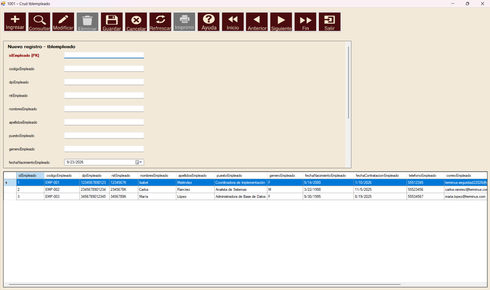

Cargar la DLL en la caja de herramientas
DLL que debe seleccionarcodigo\componentes\navegador\Navegador\CapaVista_Navegador\bin\Debug\CapaVista_Navegador.dllControl que apareceráNavegador (clase completa: CapaVista_Navegador.Navegador)Código fuente del controlcodigo\componentes\navegador\Navegador\CapaVista_Navegador\Navegador.cs
- Compile primero el proyecto CapaVista_Navegador para generar la DLL.
- Abra el formulario destino en el Diseñador de Visual Studio.
- Haga clic derecho en la Caja de herramientas y seleccione Elegir elementos / Choose Items.
- Pulse Examinar / Browse y abra la DLL de la ruta indicada arriba.
- Marque el componente Navegador del espacio de nombres
CapaVista_Navegadory acepte. - Arrastre Navegador desde la caja de herramientas hacia cualquier formulario Windows Forms.
- Seleccione el control recién agregado y revise en Propiedades > (Name) el nombre exacto que Visual Studio le asignó.
El formulario sigue heredando de
Form. No debe heredar de FrmNavegadorCrud ni crear manualmente los botones.
El número cambia con cada control agregado
No escriba siempre navegador2. Visual Studio numera cada instancia del control según los nombres que ya existen en el formulario. Si ya existe
navegador1, el nuevo normalmente será navegador2. Si ya existen navegador1 y navegador2, el siguiente normalmente será navegador3.El CRUD se configura sobre la instancia recién agregada. Por eso, antes de escribir el código, seleccione el control y mire Propiedades > (Name). El nombre que aparece allí debe coincidir exactamente con el nombre situado antes de .NavegadorMetConfigurar.
| Controles que ya existen | Nombre probable del nuevo control | Llamada que corresponde |
|---|---|---|
| Ninguno | navegador1 | navegador1.NavegadorMetConfigurar(...) |
navegador1 | navegador2 | navegador2.NavegadorMetConfigurar(...) |
navegador1 y navegador2 | navegador3 | navegador3.NavegadorMetConfigurar(...) |
El número no representa una conexión ni una versión del CRUD. Solamente identifica una instancia del control dentro del formulario. Aunque Visual Studio normalmente asigna el siguiente número, confirme siempre el valor real de (Name).
Ejemplo real: el segundo Navegador
Instancia creada por el diseñadorArchivo: codigo\componentes\seguridad\Seguridad\CapaVista_Seguridad\Form1.Designer.cs - Clase: CapaVista_Seguridad.Form1 - Campo: navegador2Lugar donde se configuraArchivo: codigo\componentes\seguridad\Seguridad\CapaVista_Seguridad\Form1.cs - Clase: CapaVista_Seguridad.Form1 - Constructor: Form1()
public Form1()
{
InitializeComponent();
navegador2.NavegadorMetConfigurar("tblempleado", 4, 4);
}En este formulario se utiliza navegador2 porque ése es el nombre de la instancia creada por el diseñador. Si se agrega un tercer control y su propiedad (Name) es navegador3, la configuración debe comenzar con navegador3.NavegadorMetConfigurar(...).
La llamada siempre va después de InitializeComponent(), porque antes las instancias del diseñador todavía no existen.

Errores frecuentes al incrustarlo
- El nombre navegador2 no existe en el contexto actual: posiblemente el control se llama
navegador1,navegador3o tiene un nombre personalizado. Revise (Name). - El CRUD aparece en otro control: la llamada está usando el nombre de una instancia anterior. Cambie el nombre antes de
.NavegadorMetConfigurarpor el del control nuevo. - El control aparece pero el CRUD no carga: compruebe que se configura la instancia visible después de
InitializeComponent(). - La DLL no aparece en la caja de herramientas: vuelva a compilar
CapaVista_Navegadory seleccione la DLL de la carpetabin\Debugindicada al inicio.